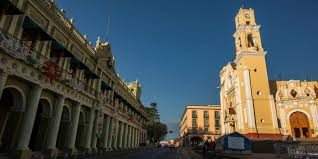

¿Por qué me gusta estudiar idiomas?
Me gusta aprender idiomas porque se me hace interesante, ya que no solo es aprender el idioma, sino también otras culturas, conoces costumbres nuevas, además que aprender diversos idiomas te da la oportunidad de tener amigos de diferentes partes del mundo.

¿Qué idiomas he tenido la oportunidad de aprender?
Cuando iba en la primaria, se dictaban clases de inglés y francés, tuve la capacidad de realizar diferentes certificaciones de mi nivel de cada uno de los idiomas, además de seguir estudiandolo por muchísimos años y hasta en la actualidad, sin embargo, no considero que maneje los dos idiomas al 100%
Ya estando en la universidad, en 2do semestre ingresé en el Centro de Idiomas de Xalapa al idioma de chino mandarín y estuve dos semestres aprendiendo este complicado idioma, sin emabrgo desistí porque sentí que no era el momento de aprender chino y decidí entrar a Italiano, actualmente pasaré al 3er nivel y estoy muy feliz de aprender la cultura y el idioma de un país tan bonito e interesante.
Cumpleaños
07 de julio de 2004
¿Dónde nací?
Xalapa, Ver.
¿Qué estudio?
Administración de Negocios Internacionales
¿Dónde estudio?
Universidad Veracruzana